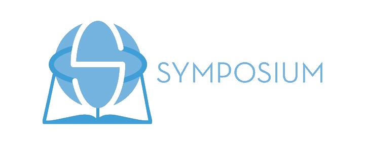
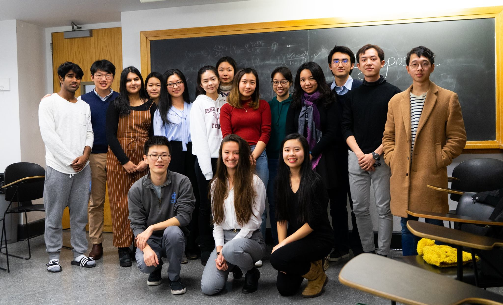
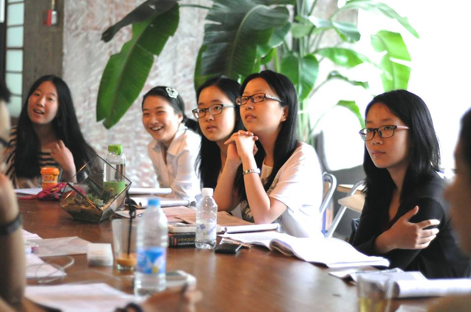
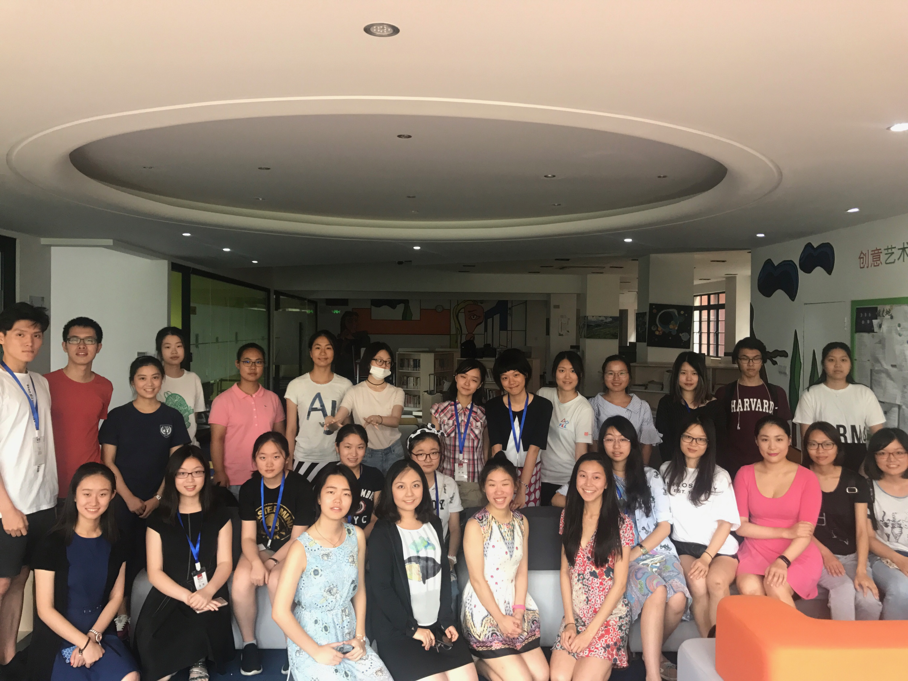

Symposium Nanjing 2019
会饮沙龙博雅体验营
活动简介
会饮沙龙的旅程始于六年前。
一群中国学生决定将哥伦比亚大学历史悠久的人文核心课程以读书会的形式带回自己的家乡，会饮沙龙就这么诞生了。我们致力于通过读书沙龙的形式推广东西方人文经典的阅读，从而培养参与者批判性思维的能力，以及在全球化背景下对文化的理解力。在中国应试体系文科学习的标准答案之外，我们希望唤起高中生们对以批判性思维阅读并审视人文经典的兴趣，因此我们借鉴哥伦比亚大学博雅教育体系中的的模式和宗旨，希望给更多学生和读者创办一个阅读和思想碰撞的平台。今年八月，会饮沙龙将首次来到南京，以一周的会饮体验营的形式和大家见面。
赞助与合作
活动安排
体验营开始于2019年8月4日，结束于2019年8月10日。其组成部分有研讨会，工作坊，和课外活动。
本次南京活动的主题是「意识与逻辑」(Consciousness and Logic）。
研讨会
来自博雅教育背景的引读人们会选择文本、设计课程表，带领学生们阅读并讨论东西方人文经典，分享自己的博雅教育体验。研讨会注重观点的形成与表达，希望通过自由讨论引发不同的感受和见解。
今年南京的研讨会内容是「德国唯心论中的认识论部分」（Epistemology in German Idealism）。

工作坊
除了日常的课堂讨论，工作坊可以涉及写作、辩论、东西方艺术及音乐……我们想把学习的范围扩展到方方面面，从而更彻底地贯彻博雅教育。
今年南京的工作坊内容是「数学严格性的开胃酒」（An Aperitif of the Rigor of Mathematics）。

课外活动
我们相信文字之美可以在生活中寻求。我们希望把经典的书目和南京丰富的文化体验结合在一起，让整座城市成为我们的教室。博物馆、剧院、书店、古迹公园……书本的印记无处不在。

常见问题
面向⼈群和活动⼈数上限?
活动⾯向国内在读⾼中⽣或者⼤学⽣，在暑期确保能够参加全部的活动，具有⼀定英语阅读及表达能⼒，同时热爱⽂学哲学经典。申请在6月20日开放。希望首次在南京的活动可以有10~20位学⽣参与。
每天的阅读量和作业安排?
考虑到不同学生的不同情况，我们会合理安排阅读量，⼀般为每天20~50页。布置的阅读需要在研讨会之前完成。引读⼈会根据情况请学⽣基于阅读感受写一篇短文章，并在研讨会时交流。
活动费⽤和福利?
会饮是⾮营利组织，活动本身完全免费。⻝宿出行需要个⼈承担。我们会提供⽂具纸品和部分课外活动的交通费⽤。课程结束后会颁发证书以证明参与者完成了体验营。
报名参与
如果您热爱文学哲学经典，并希望把自己的博雅教育体验和更多人分享，欢迎报名申请引读人和工作坊负责人！申请截止日期是4月30日。
我们现在开始接受感兴趣的同学们的申请。申请将于7月15日截止，结果将会在7月20日告知各位。敬请期待！
联系我们
欢迎您向我们提问或者询问关于合作、报名、加入团队等的更多细节！期待您的来信。
© Made by Yuxuan. All rights reserved. Design: HTML5 UP.